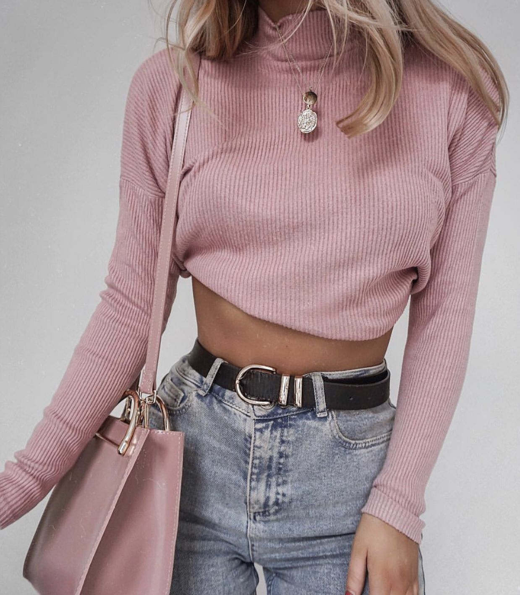

La armonía de los tonos pasteles define por completo cada uno de los detalles del movimiento aesthetic. Existe un balance muy claro entre cárdigans tejidos de hilos suaves, faldas tableadas de cortes escolares, peinados adornados con moños satinados y calzado tipo mocasín oscuro con calcetas de encaje blancas muy altas.
Este estilo se enfoca en crear una identidad visual nostálgica y sumamente pulida que se transmite principalmente a través de plataformas digitales y fotografías detalladas que capturan la esencia de la elegancia juvenil diaria.
